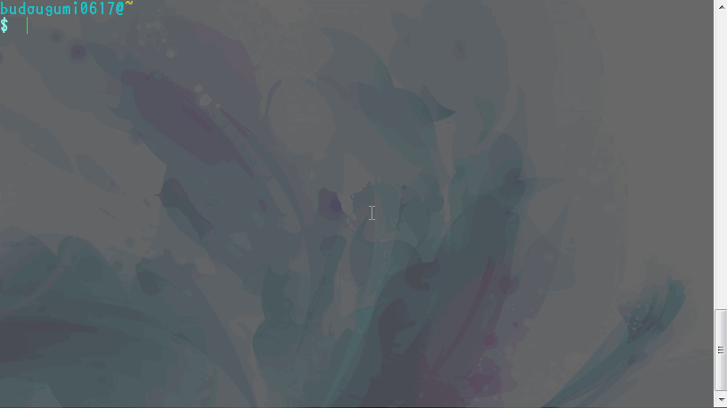
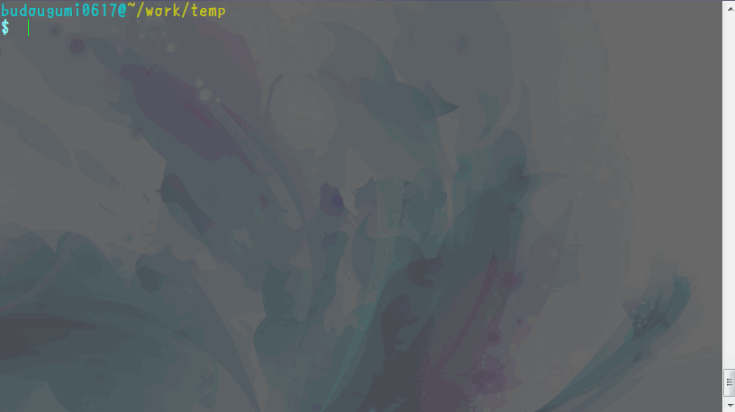
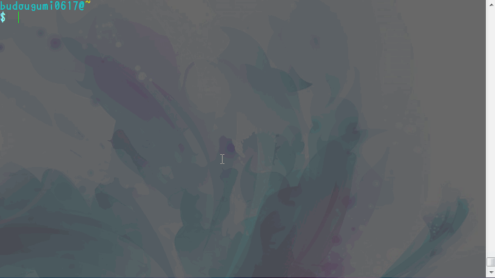
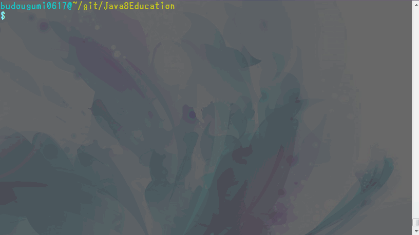
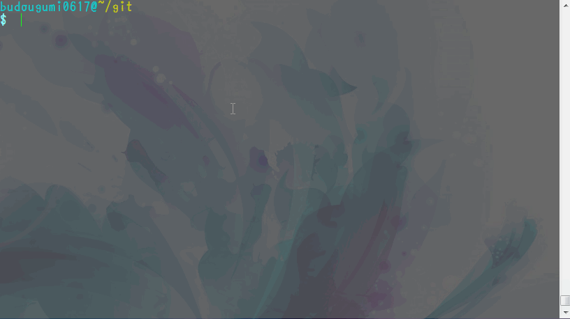
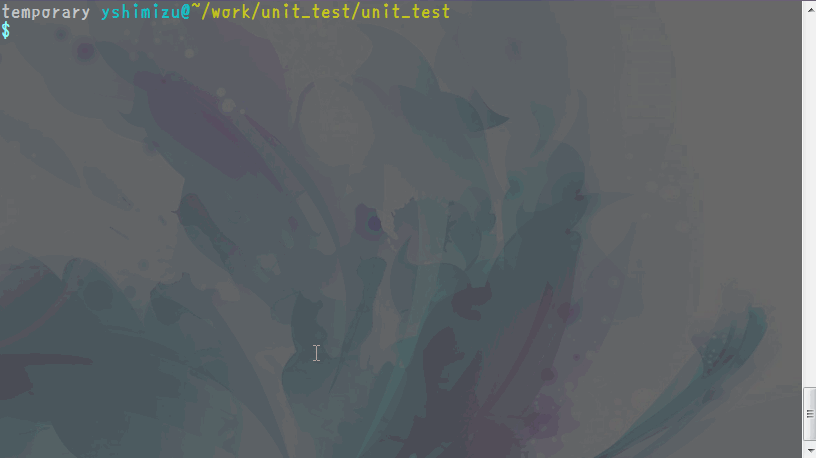
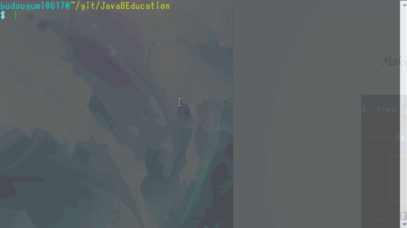
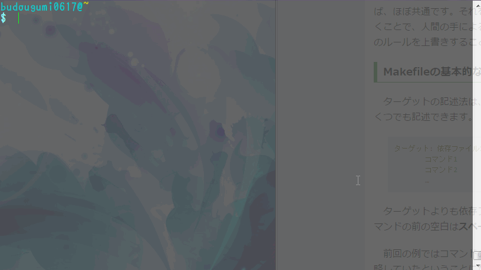
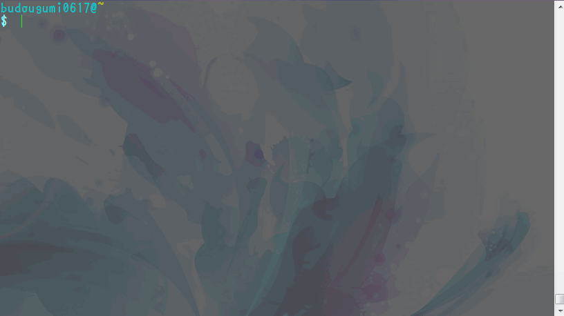

zshと.zshrcで
世界が変わった
2014/09/16
リコーITソリューションズ株式会社
清水 陽一郎
Agenda
- 「zsh」って何？「.zshrc」とは？
- ひたすらzshの機能自慢
- bashでも使える便利コマンド
- 複数環境で設定するのがめんどくさいときは
「zsh」って何？「.zshrc」とは？
コマンドシェルの一つ。読み方は「ゼットシェル」
bash、cshなどあるが、かなり強力なシェル。
Linuxの標準シェルはbash
機能が豊富すぎてマニュアルが全部読めないくらい長い
「.zshrc」はzsh版の.bashrc。
OpenSuSE12.3にも標準で搭載
chshコマンドでbashからzsh変更可能
zshの便利なところ
以降は.zshrcとoh-my-zshで実現
コマンドオプションは覚えなくても平気
コマンドオプションの意味、候補を羅列してくれる
TABキー押下でサブコマンドや「-」、「--」に続くオプション候補を表示
.zshrcに独自に作成したエイリアスもちゃんと候補に挙がる

ファイル名の大文字小文字は覚えなくて平気
ディレクトリ、ファイル名は綴りだけ覚えておけばOK
大文字小文字はTABキーで補完変換される

ディレクトリ名も覚えなくて平気
ディレクトリ名は頭文字だけ覚えておけばOK
TABキーを押すことで補完される

編集したファイルを覚えておかなくても平気
コミット時、未コミットのファイルを自動的に補完
TABキー押下で自動的に未コミットのファイルを入力してくれる

リモートブランチを覚えておかなくても平気
構成管理中のカレントディレクトリではブランチ名を表示
例：originブランチからgh-pagesに変更した場合

makeのターゲットを覚えなくて平気
Makefile内からターゲットを自動検索、TABキー押下時の候補に
例：「all」、「ut_BasicFunction」、「clean」ターゲットを設定したMakefile

「echo $?」しなくても平気
前回実行したコマンドが成功したか表示できる
Make -j4した際など、コマンドが成功したかわかりづらい時
例：「cd」に失敗して「$」が赤くなる。

ローカルホスト名も覚えなくて平気
「/etc/hosts」のローカルホストを補完してくれる
例：「ssh」、「ping」で補完

bashでも使える
便利なコマンド/ショートカット
zsh自慢だけじゃしょうがないので、bashでも使えるコマンド、ショートカット
「Ctrl+R」でhistoryのインクリメンタルリサーチ
コマンド履歴を検索できる。途中の文字列でも平気
検索後にコマンドを編集することも可能
環境変数$SAVEHIST、$HISTSIZEは多め(10000など)にしておくこと

egrepで複数ワード検索
「egrep -inR --exclude-dir=".svn" --include="*.c**" "foo||bar" ./」
オプションが長いので、「Ctrl+R」前のコマンドを編集すれば便利
| -i |
大文字小文字無視 |
| -n |
該当行の行番号表示 |
| -R |
サブディレクトリも検索 |
| --exclude-dir= |
検索除外ディレクトリ |
| --include= |
対象とするファイルの絞込 |
| "foo||bar" |
検索条件はOR、ANDなどで設定可能 |
| ./ |
検索開始ディレクトリ |
複数環境で毎回環境設定するのが
めんどくさいときは
個人PC、開発環境、いろんな場所で設定変えるのめんどくさい。。。
デフォルトのままのほうが新しい環境でもすぐ動かせるし。。。
Thank U for Reading
Copyright Ricoh IT Solutions, LTD.